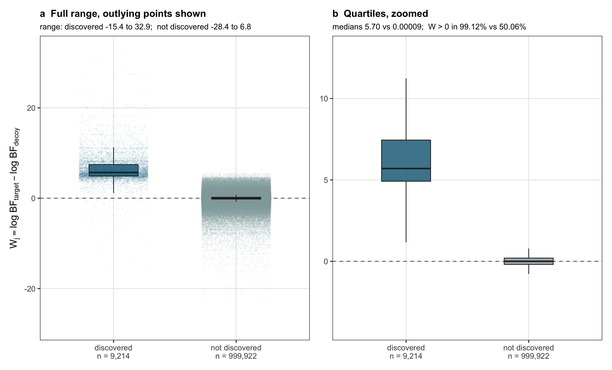
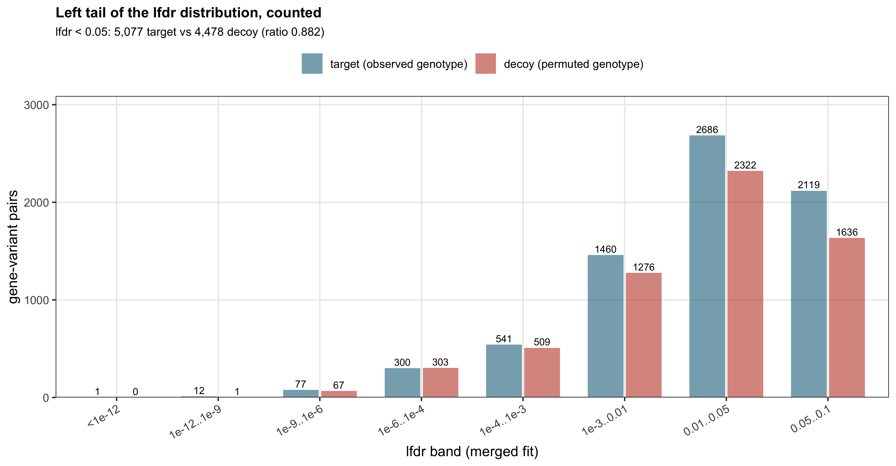

Last updated: 2026-08-25
Checks: 6 1
Knit directory: coderepo-local/
This reproducible R Markdown analysis was created with workflowr (version 1.7.2). The Checks tab describes the reproducibility checks that were applied when the results were created. The Past versions tab lists the development history.
The R Markdown is untracked by Git. To know which version of the R
Markdown file created these results, you’ll want to first commit it to
the Git repo. If you’re still working on the analysis, you can ignore
this warning. When you’re finished, you can run
wflow_publish to commit the R Markdown file and build the
HTML.
Great job! The global environment was empty. Objects defined in the global environment can affect the analysis in your R Markdown file in unknown ways. For reproduciblity it’s best to always run the code in an empty environment.
The command set.seed(20251109) was run prior to running
the code in the R Markdown file. Setting a seed ensures that any results
that rely on randomness, e.g. subsampling or permutations, are
reproducible.
Great job! Recording the operating system, R version, and package versions is critical for reproducibility.
Nice! There were no cached chunks for this analysis, so you can be confident that you successfully produced the results during this run.
Great job! Using relative paths to the files within your workflowr project makes it easier to run your code on other machines.
Great! You are using Git for version control. Tracking code development and connecting the code version to the results is critical for reproducibility.
The results in this page were generated with repository version 09f63bc. See the Past versions tab to see a history of the changes made to the R Markdown and HTML files.
Note that you need to be careful to ensure that all relevant files for
the analysis have been committed to Git prior to generating the results
(you can use wflow_publish or
wflow_git_commit). workflowr only checks the R Markdown
file, but you know if there are other scripts or data files that it
depends on. Below is the status of the Git repository when the results
were generated:
Ignored files:
Ignored: .DS_Store
Ignored: .Rhistory
Ignored: .Rproj.user/
Ignored: Rplots.pdf
Ignored: analysis/.DS_Store
Ignored: analysis/.Rhistory
Ignored: code/.DS_Store
Ignored: code/.Rhistory
Ignored: code/revision_simulations/.DS_Store
Ignored: data/appendixB/
Ignored: data/dynamic_eQTL_real/
Ignored: data/revision_simulations/
Ignored: data/toy_example/
Ignored: output/dynamic_eQTL_real/
Ignored: output/pdf/
Ignored: output/playwright/
Ignored: output/revision_simulations/
Ignored: scripts/
Untracked files:
Untracked: analysis/revision_internal_fash_knockoff.rmd
Untracked: code/revision_simulations/internal/fash_knockoff/reporting.R
Untracked: code/revision_simulations/internal/fash_knockoff/test_reporting.R
Unstaged changes:
Modified: code/revision_simulations/internal/fash_knockoff/plot_lfdr_histograms.R
Modified: code/revision_simulations/internal/fash_knockoff/plot_w_boxplot_by_discovery.R
Note that any generated files, e.g. HTML, png, CSS, etc., are not included in this status report because it is ok for generated content to have uncommitted changes.
There are no past versions. Publish this analysis with
wflow_publish() to start tracking its development.
For each of the tested gene-variant pairs a matched permuted decoy is built, and target and decoy units are fitted jointly, so a single empirical-Bayes prior scores both sides of every pair.
G_pi = P G,
shared by all 745,867 variants and all 16 time points. Row permutation
leaves every variant’s dosage multiset, and therefore its MAF, exactly
unchanged, and leaves the full LD structure unchanged because
(PG)' (PG) = G' P' P G = G' G identically.Y ~ 1 + G_permuted + PC1 + ... + PC5, and the raw standard
errors are converted to the same t-to-normal scale used by the primary
analysis.BF_update()
does not modify L_matrix, so those rows are bit-identical
whichever fit is supplied. Only the decoy units required new likelihood
evaluations.W_j = log BF_j - log BF_j,pi, both Bayes factors scored by
the merged prior. Selection uses knockoff+,
T_q = min{t > 0 : (1 + #{W <= -t}) / (#{W >= t} v 1) <= q}.Because the two sides share one prior, swapping a pair leaves the
2J-unit multiset unchanged, so the fitted prior is
unchanged and only that pair’s W flips sign. This
antisymmetry is asserted in test_fash_knockoff_helpers.R
rather than assumed.
The decoy is not a simulated diagonal-Gaussian null. It is built from the same longitudinal expression measurements, so it retains the gene-specific temporal dependence induced by repeated measurements on the same cell lines. That is the point of the design, and, as the results below show, also the reason it has limited power.
plot_w_by_discovery(statistics)
Competition statistic by published discovery status. Panel a draws the outlying points, because the tails on both sides are where knockoff+ actually operates.
show_table(
fash_knockoff_group_summary(statistics),
"Distribution of W by published discovery status."
)| group | n | min | q25 | median | q75 | max | frac_positive |
|---|---|---|---|---|---|---|---|
| discovered | 9214 | -15.3919 | 4.9161 | 5.7014 | 7.4494 | 32.8712 | 0.9912 |
| not discovered | 999922 | -28.3716 | -0.1926 | 0.0001 | 0.1993 | 6.7791 | 0.5006 |
Two things matter in this figure.
The non-discovered box is centred on zero. Median
W is 0.00009 and W > 0 in 50.06% of the
999,922 pairs the published rule did not call. This is the strongest
available check on the whole construction: on pairs with no claimed
signal, target and decoy are behaving exchangeably. For contrast,
earlier residual-block decoy constructions sat at 0.582 on a near-null
pair set, about 13 sd from 0.5.
But the non-discovered tail reaches further than the discovered one. The decoy beats the target by as much as 28.4 log units among pairs that were never called. Those are pure artefact, because the decoy is null by construction, and they are what consumes the FDR budget.
This figure does not validate the calls. The
grouping conditions on the target: the published rule selects pairs with
a high target Bayes factor, and a high target BF mechanically forces
W > 0 unless the decoy is also high. A null pair that
reached a high BF by chance would sit in the same box. The figure
locates W by discovery status; it is descriptive, not
confirmatory. The same caveat applies to any statistic computed after
conditioning on the published calls.
Both sets of lfdr values come from the same merged fit, so any difference between the arms is a difference in evidence, not in calibration.
plot_lfdr_bands(statistics)
Left tail of the lfdr distribution for both arms. Separation exists only below about 1e-9.
show_table(
fash_knockoff_lfdr_bands(statistics),
"lfdr band counts and the decoy-to-target ratio.",
digits = 3
)| lfdr_band | target | decoy | decoy_over_target |
|---|---|---|---|
| <1e-12 | 1 | 0 | 0.000 |
| 1e-12..1e-9 | 12 | 1 | 0.083 |
| 1e-9..1e-6 | 77 | 67 | 0.870 |
| 1e-6..1e-4 | 300 | 303 | 1.010 |
| 1e-4..1e-3 | 541 | 509 | 0.941 |
| 1e-3..0.01 | 1460 | 1276 | 0.874 |
| 0.01..0.05 | 2686 | 2322 | 0.864 |
| all < 0.05 | 5077 | 4478 | 0.882 |
| 0.05..0.1 | 2119 | 1636 | 0.772 |
For every 100 target pairs below lfdr = 0.05, the
permuted decoy produces about 88. The two arms separate only below
roughly 1e-9; between 1e-6 and
1e-4 the decoy is marginally ahead.
The one quantity that conditions on nothing is the global excess of target wins. Treating genes as independent clusters, and assuming nothing about within-gene correlation:
show_table(
fash_knockoff_sign_evidence(statistics),
"Sign-test evidence for a global excess of target wins.",
digits = 4
)| quantity | value |
|---|---|
| pairs | 1009136.0000 |
| genes | 6362.0000 |
| target-win excess | 10346.0000 |
| naive sign-test z (independent pairs) | 10.2991 |
| cluster-robust z (genes as clusters) | 2.0450 |
| design effect | 25.3626 |
| implied within-gene sign correlation | 0.1546 |
The naive sqrt(n) sign test badly overstates this. Pairs
within a gene share one expression trajectory and are in LD, so they are
not independent: the measured design effect is about 25, implying a
within-gene sign correlation near 0.16. The cluster-robust value is the
one to quote, and it agrees with the independent gene-level test.
show_table(
fash_knockoff_selection_table(statistics, q_grid),
"knockoff+ selection at pair level and at gene level.",
digits = 4
)| unit | q | threshold | n_discoveries | n_decoy_wins | estimated_fdr |
|---|---|---|---|---|---|
| gene-variant pair | 0.01 | NA | 0 | NA | NA |
| gene-variant pair | 0.05 | NA | 0 | NA | NA |
| gene-variant pair | 0.10 | NA | 0 | NA | NA |
| gene-variant pair | 0.15 | 22.8179 | 17 | 1 | 0.1176 |
| gene-variant pair | 0.20 | 22.2859 | 19 | 2 | 0.1579 |
| gene-variant pair | 0.30 | 21.4283 | 20 | 5 | 0.3000 |
| gene-variant pair | 0.50 | 17.0271 | 83 | 40 | 0.4940 |
| gene (max vs max) | 0.01 | NA | 0 | NA | NA |
| gene (max vs max) | 0.05 | NA | 0 | NA | NA |
| gene (max vs max) | 0.10 | NA | 0 | NA | NA |
| gene (max vs max) | 0.15 | NA | 0 | NA | NA |
| gene (max vs max) | 0.20 | NA | 0 | NA | NA |
| gene (max vs max) | 0.30 | NA | 0 | NA | NA |
| gene (max vs max) | 0.50 | NA | 0 | NA | NA |
Nothing survives q = 0.05 at either level. The
pair-level floor is reached at q = 0.15; note that it is
bounded below by 1/R, so a 17-pair selection cannot report
a rate under about 0.06 whatever the data say.
show_table(
fash_knockoff_selected_pairs(statistics, 0.15),
"The pairs selected at q = 0.15. Every one is a published call.",
digits = 4
)| gene_id | variant_id | published_lfdr | log10_target_BF | log10_decoy_BF | W |
|---|---|---|---|---|---|
| ENSG00000134369 | rs12407966 | 0 | 15.07 | 0.80 | 32.87 |
| ENSG00000151388 | rs35399 | 0 | 13.17 | 0.04 | 30.23 |
| ENSG00000151388 | rs35400 | 0 | 13.02 | 0.04 | 29.88 |
| ENSG00000186654 | rs136889 | 0 | 12.70 | -0.01 | 29.26 |
| ENSG00000178878 | rs1014707 | 0 | 12.03 | 0.08 | 27.50 |
| ENSG00000178878 | rs1014708 | 0 | 12.03 | 0.08 | 27.50 |
| ENSG00000178878 | rs10845611 | 0 | 12.03 | 0.08 | 27.50 |
| ENSG00000178878 | rs10845612 | 0 | 12.03 | 0.08 | 27.50 |
| ENSG00000178878 | rs2013760 | 0 | 12.03 | 0.08 | 27.50 |
| ENSG00000178878 | rs7132848 | 0 | 12.03 | 0.08 | 27.50 |
| ENSG00000178878 | rs9804886 | 0 | 12.01 | 0.08 | 27.47 |
| ENSG00000178878 | rs3759216 | 0 | 11.95 | 0.06 | 27.38 |
| ENSG00000178878 | rs36228499 | 0 | 11.88 | 0.04 | 27.26 |
| ENSG00000148180 | rs1579095 | 0 | 10.01 | -0.05 | 23.18 |
| ENSG00000148180 | rs58223619 | 0 | 10.01 | -0.05 | 23.18 |
| ENSG00000100376 | rs170507 | 0 | 9.95 | -0.03 | 22.98 |
| ENSG00000148180 | rs55689715 | 0 | 9.85 | -0.06 | 22.82 |
These are clean: target evidence of 10^10 to
10^15 against decoy Bayes factors of about 1. The
permutation does not move them.
They are also concentrated. The 17 pairs fall in only 6 genes, and one gene contributes nine of them.
show_table(
fash_knockoff_tail_concentration(statistics, c(5, 10, 15, 20, 25)),
"Tail counts as pairs and as distinct genes.",
digits = 3
)| threshold | target_pairs | target_genes | decoy_pairs | decoy_genes | pair_ratio | gene_ratio |
|---|---|---|---|---|---|---|
| 5 | 6864 | 980 | 5910 | 931 | 0.861 | 0.951 |
| 10 | 839 | 165 | 762 | 176 | 0.909 | 1.073 |
| 15 | 149 | 44 | 116 | 40 | 0.785 | 0.932 |
| 20 | 41 | 12 | 21 | 9 | 0.537 | 0.833 |
| 25 | 13 | 4 | 1 | 1 | 0.154 | 0.500 |
Counting genes rather than pairs is the honest way to count
independent events, and it removes most of the apparent pair-level
advantage. At a threshold of 10 there are more decoy
genes than target genes. The pair-level estimate at
q = 0.15 rests on a single decoy win, so its sampling
variability is large; collapsed to genes the same threshold gives
roughly 0.33 rather than 0.118.
Any antisymmetric function of the two Bayes factors fixes the sign
pattern, so only the ordering of |W| can change.
Aggregating within a gene by a maximum is a difference of two
extreme-value variables and is the noisiest choice.
show_table(
fash_knockoff_gene_statistic_comparison(statistics, c(0.05, 0.20)),
"Five gene-level aggregations of the same pair-level evidence.",
digits = 3
)| statistic | frac_positive | t_statistic | min_estimated_fdr | discoveries_q20 |
|---|---|---|---|---|
| max - max | 0.513 | 2.171 | 0.579 | 0 |
| sum - sum | 0.517 | 3.471 | 0.200 | 5 |
| mean - mean | 0.517 | 4.179 | 0.400 | 0 |
| top5 - top5 | 0.517 | 2.850 | 0.200 | 5 |
| top20 - top20 | 0.517 | 3.437 | 0.500 | 0 |
Replacing the maximum with a mean roughly doubles the global
t statistic, so the aggregation choice does matter for
detecting that signal exists. It does not rescue selection: no
aggregation reaches q = 0.05.
paths <- fash_knockoff_paths(".")
show_table(
read.csv(file.path(paths$summary, "genotype_covariate_alignment.csv"),
check.names = FALSE),
"Genotype variance explained by PC1-PC5, both arms, all 16 time points.",
digits = 4
)| time | arm | n_variant | mean_r_squared | 50% | 75% | 90% | 95% | 99% |
|---|---|---|---|---|---|---|---|---|
| 0 | original | 745844 | 0.2790 | 0.2618 | 0.3711 | 0.4756 | 0.5386 | 0.6533 |
| 0 | permuted | 745844 | 0.2775 | 0.2605 | 0.3680 | 0.4724 | 0.5369 | 0.6462 |
| 1 | original | 745844 | 0.2772 | 0.2592 | 0.3665 | 0.4739 | 0.5403 | 0.6583 |
| 1 | permuted | 745844 | 0.2780 | 0.2591 | 0.3680 | 0.4763 | 0.5414 | 0.6578 |
| 2 | original | 745844 | 0.3335 | 0.3176 | 0.4427 | 0.5580 | 0.6240 | 0.7336 |
| 2 | permuted | 745844 | 0.3339 | 0.3182 | 0.4427 | 0.5590 | 0.6275 | 0.7397 |
| 3 | original | 745844 | 0.2745 | 0.2579 | 0.3639 | 0.4665 | 0.5288 | 0.6478 |
| 3 | permuted | 745844 | 0.2785 | 0.2612 | 0.3679 | 0.4735 | 0.5376 | 0.6508 |
| 4 | original | 745844 | 0.3312 | 0.3148 | 0.4400 | 0.5559 | 0.6221 | 0.7373 |
| 4 | permuted | 745844 | 0.3361 | 0.3195 | 0.4465 | 0.5632 | 0.6269 | 0.7465 |
| 5 | original | 745844 | 0.2757 | 0.2587 | 0.3677 | 0.4729 | 0.5373 | 0.6472 |
| 5 | permuted | 745844 | 0.2791 | 0.2623 | 0.3724 | 0.4770 | 0.5394 | 0.6521 |
| 6 | original | 745844 | 0.2772 | 0.2594 | 0.3682 | 0.4740 | 0.5397 | 0.6608 |
| 6 | permuted | 745844 | 0.2759 | 0.2585 | 0.3654 | 0.4705 | 0.5335 | 0.6479 |
| 7 | original | 745844 | 0.2750 | 0.2575 | 0.3645 | 0.4699 | 0.5343 | 0.6507 |
| 7 | permuted | 745844 | 0.2760 | 0.2598 | 0.3647 | 0.4673 | 0.5313 | 0.6464 |
| 8 | original | 745844 | 0.2753 | 0.2570 | 0.3642 | 0.4700 | 0.5355 | 0.6566 |
| 8 | permuted | 745844 | 0.2779 | 0.2598 | 0.3675 | 0.4737 | 0.5399 | 0.6606 |
| 9 | original | 745844 | 0.2760 | 0.2577 | 0.3660 | 0.4736 | 0.5373 | 0.6505 |
| 9 | permuted | 745844 | 0.2776 | 0.2594 | 0.3680 | 0.4737 | 0.5368 | 0.6516 |
| 10 | original | 745844 | 0.2778 | 0.2605 | 0.3683 | 0.4731 | 0.5378 | 0.6608 |
| 10 | permuted | 745844 | 0.2786 | 0.2606 | 0.3702 | 0.4748 | 0.5378 | 0.6590 |
| 11 | original | 745844 | 0.2778 | 0.2594 | 0.3676 | 0.4752 | 0.5412 | 0.6584 |
| 11 | permuted | 745844 | 0.2807 | 0.2635 | 0.3707 | 0.4773 | 0.5438 | 0.6605 |
| 12 | original | 745844 | 0.2759 | 0.2592 | 0.3662 | 0.4696 | 0.5324 | 0.6448 |
| 12 | permuted | 745844 | 0.2795 | 0.2624 | 0.3709 | 0.4777 | 0.5399 | 0.6479 |
| 13 | original | 745844 | 0.2935 | 0.2757 | 0.3907 | 0.5013 | 0.5661 | 0.6830 |
| 13 | permuted | 745844 | 0.2927 | 0.2759 | 0.3885 | 0.4974 | 0.5620 | 0.6788 |
| 14 | original | 745844 | 0.2769 | 0.2598 | 0.3672 | 0.4724 | 0.5370 | 0.6522 |
| 14 | permuted | 745844 | 0.2789 | 0.2629 | 0.3696 | 0.4746 | 0.5375 | 0.6517 |
| 15 | original | 745844 | 0.2781 | 0.2607 | 0.3684 | 0.4744 | 0.5371 | 0.6506 |
| 15 | permuted | 745844 | 0.2793 | 0.2622 | 0.3691 | 0.4762 | 0.5409 | 0.6555 |
show_table(
read.csv(file.path(paths$summary, "uninformative_variant_screen.csv")),
"Variants carrying no residual genotype information, by time point and arm.",
digits = 0
)| time_position | n_donor | n_uninformative_observed | n_uninformative_permuted |
|---|---|---|---|
| 1 | 19 | 0 | 0 |
| 2 | 19 | 0 | 0 |
| 3 | 16 | 0 | 0 |
| 4 | 19 | 0 | 0 |
| 5 | 16 | 0 | 23 |
| 6 | 19 | 0 | 0 |
| 7 | 19 | 0 | 0 |
| 8 | 19 | 0 | 0 |
| 9 | 19 | 0 | 0 |
| 10 | 19 | 0 | 0 |
| 11 | 19 | 0 | 0 |
| 12 | 19 | 0 | 0 |
| 13 | 19 | 0 | 0 |
| 14 | 18 | 0 | 0 |
| 15 | 19 | 0 | 0 |
| 16 | 19 | 0 | 0 |
0 against a scale of 13.1, on a 50-unit slice. Target and
decoy rows therefore sit on identical numerical footing.2.8e-13 and 1.6e-12 on a 2,000-pair slice. The
decoy is built by the code path that reproduces the target.R^2 is 0.2847 for the observed genotype and 0.2863 for the
permuted genotype, against a chance expectation near
5/18 = 0.278. Had the observed arm been systematically
higher, decoy standard errors would have been deflated and the
competition would have been anti-conservative in a way nothing
downstream could reveal.Code lives in
code/revision_simulations/internal/fash_knockoff/. The
analysis ran on Midway3 under R 4.4.1 and fashr 0.1.43
(bf223df75da6e41ae48607a56b4cd12d7c3b24e7); the decoy
likelihood took 4.34 hours on 32 cores.
sbatch slurm/18_fash_knockoff.sbatchsessionInfo()R version 4.5.1 (2025-06-13)
Platform: aarch64-apple-darwin20
Running under: macOS Sequoia 15.6.1
Matrix products: default
BLAS: /System/Library/Frameworks/Accelerate.framework/Versions/A/Frameworks/vecLib.framework/Versions/A/libBLAS.dylib
LAPACK: /Library/Frameworks/R.framework/Versions/4.5-arm64/Resources/lib/libRlapack.dylib; LAPACK version 3.12.1
locale:
[1] en_CA/en_CA/en_CA/C/en_CA/en_CA
time zone: America/Chicago
tzcode source: internal
attached base packages:
[1] stats graphics grDevices utils datasets methods base
other attached packages:
[1] ggplot2_4.0.3 workflowr_1.7.2
loaded via a namespace (and not attached):
[1] gtable_0.3.6 jsonlite_2.0.0 dplyr_1.1.4 compiler_4.5.1
[5] promises_1.5.0 tidyselect_1.2.1 Rcpp_1.1.1-1.1 stringr_1.6.0
[9] git2r_0.36.2 dichromat_2.0-0.1 callr_3.7.6 later_1.4.4
[13] jquerylib_0.1.4 scales_1.4.0 yaml_2.3.12 fastmap_1.2.0
[17] R6_2.6.1 labeling_0.4.3 patchwork_1.3.2 generics_0.1.4
[21] knitr_1.50 tibble_3.3.0 rprojroot_2.1.1 RColorBrewer_1.1-3
[25] bslib_0.9.0 pillar_1.11.1 rlang_1.2.0 cachem_1.1.0
[29] stringi_1.8.9 httpuv_1.6.16 xfun_0.55 S7_0.2.2
[33] getPass_0.2-4 fs_1.6.6 sass_0.4.10 otel_0.2.0
[37] cli_3.6.6 withr_3.0.3 magrittr_2.0.5 ps_1.9.1
[41] grid_4.5.1 digest_0.6.39 processx_3.8.6 rstudioapi_0.17.1
[45] lifecycle_1.0.5 vctrs_0.7.3 evaluate_1.0.5 glue_1.8.1
[49] farver_2.1.2 whisker_0.4.1 rmarkdown_2.30 httr_1.4.7
[53] tools_4.5.1 pkgconfig_2.0.3 htmltools_0.5.9
sessionInfo()R version 4.5.1 (2025-06-13)
Platform: aarch64-apple-darwin20
Running under: macOS Sequoia 15.6.1
Matrix products: default
BLAS: /System/Library/Frameworks/Accelerate.framework/Versions/A/Frameworks/vecLib.framework/Versions/A/libBLAS.dylib
LAPACK: /Library/Frameworks/R.framework/Versions/4.5-arm64/Resources/lib/libRlapack.dylib; LAPACK version 3.12.1
locale:
[1] en_CA/en_CA/en_CA/C/en_CA/en_CA
time zone: America/Chicago
tzcode source: internal
attached base packages:
[1] stats graphics grDevices utils datasets methods base
other attached packages:
[1] ggplot2_4.0.3 workflowr_1.7.2
loaded via a namespace (and not attached):
[1] gtable_0.3.6 jsonlite_2.0.0 dplyr_1.1.4 compiler_4.5.1
[5] promises_1.5.0 tidyselect_1.2.1 Rcpp_1.1.1-1.1 stringr_1.6.0
[9] git2r_0.36.2 dichromat_2.0-0.1 callr_3.7.6 later_1.4.4
[13] jquerylib_0.1.4 scales_1.4.0 yaml_2.3.12 fastmap_1.2.0
[17] R6_2.6.1 labeling_0.4.3 patchwork_1.3.2 generics_0.1.4
[21] knitr_1.50 tibble_3.3.0 rprojroot_2.1.1 RColorBrewer_1.1-3
[25] bslib_0.9.0 pillar_1.11.1 rlang_1.2.0 cachem_1.1.0
[29] stringi_1.8.9 httpuv_1.6.16 xfun_0.55 S7_0.2.2
[33] getPass_0.2-4 fs_1.6.6 sass_0.4.10 otel_0.2.0
[37] cli_3.6.6 withr_3.0.3 magrittr_2.0.5 ps_1.9.1
[41] grid_4.5.1 digest_0.6.39 processx_3.8.6 rstudioapi_0.17.1
[45] lifecycle_1.0.5 vctrs_0.7.3 evaluate_1.0.5 glue_1.8.1
[49] farver_2.1.2 whisker_0.4.1 rmarkdown_2.30 httr_1.4.7
[53] tools_4.5.1 pkgconfig_2.0.3 htmltools_0.5.9